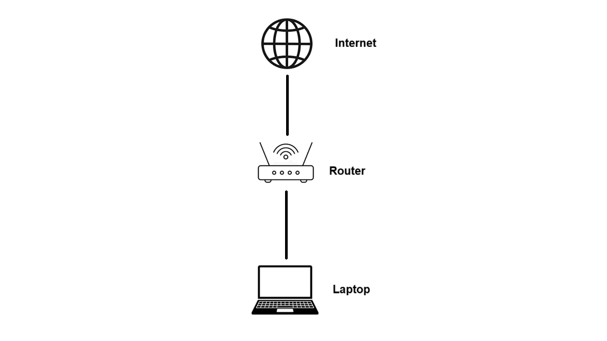
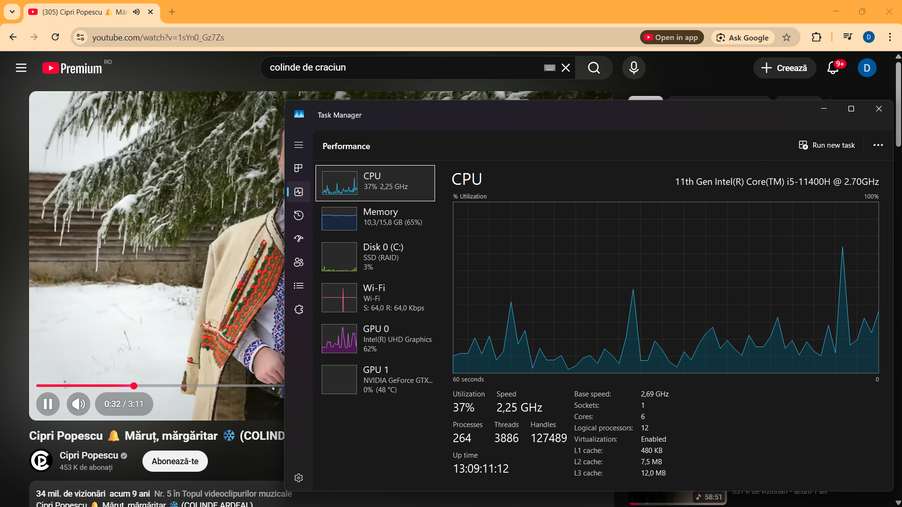
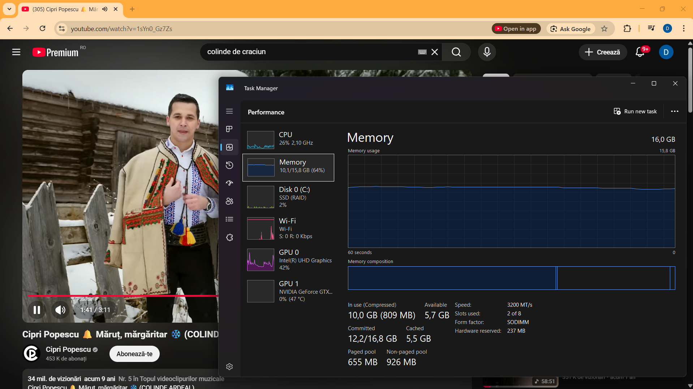
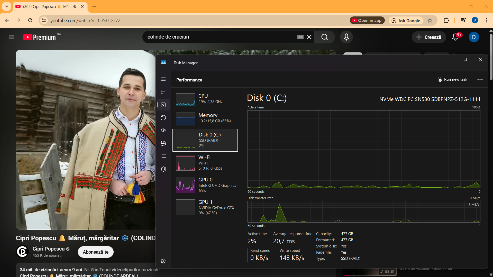

Abrudan David-Iulian
E-mail: abrudan.pe.david@student.utcluj.ro
Structura retelei personale si accesul la internet

Reteaua personala este formata din router, laptop si conexiune la internet.
Caracteristicile conexiunii la retea
- Adresa IP: 192.168.0.164(Preferred)
- Adresa MAC: 14-75-5B-9A-17-C1
- Debit download: 300 Mbps
- Debit upload: 150 Mbps
Specificatii tehnice ale statiei principale de lucru
| Denumire componenta |
Producator |
Parametri |
| Procesor |
Intel |
Core i5-11400H |
| Memorie RAM |
Kingston |
16 GB |
| SSD |
NVMe WDC PC SN530 SDBPNPZ-512G-1114 |
512 GB |
Utilizarea resurselor (dublu click pe text pentru slide-show)


